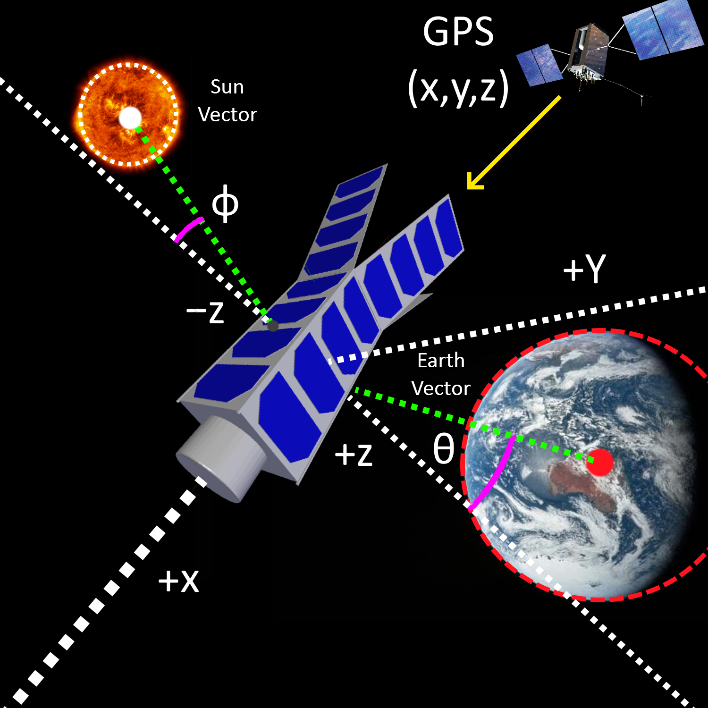
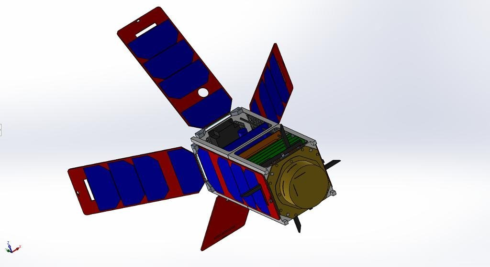

Scientific CubeSat Concept Study:

This project consisted in the conceptual design of a 2U CubeSat mission aimed at measuring the concentration of CO2 in the thermosphere. The proposed spacecraft is also a technology demonstrator for the use of deployable solar arrays for passive attitude bias, SLS 3D printing for the primary structure and shape memory alloys in deployment mechanisms.
The development was carried out following a concurrent design approach alongside five other students. My work was centred on the Attitude Determination and Control System (ADCS), for which I took full responsibility.

The ADCS's task is to satisfy the pointing requirements imposed by other subsystems, such as the payload and power raising. The first step in the development of the ADCS consisted in precisely defining the mission's pointing requirements. This was a joint task between all the spacecraft subsystems.
To satisfy the defined tolerances, the CubeSat was provided with an Earth sensor, a fine Sun sensor, a GPS receiver and an artificial coarse Sun vector created by combining the power output measurements from each array.
The required control authority depends on the magnitude of the expected environmental disturbances. In LEO, notable disturbances can arise from aerodynamic drag, gravity gradients, and to a lesser extent, magnetic moments and solar radiation pressure. The impact of each of them was individualy assesed and quantified at both beggining and end-of-life altitudes.
The main source of disturbances came in the form collisions with the rarefied gases present in the high atmosphere (≈400km), which were in the other of µNm.
The main pointing requirement demands the spacecraft to point in the "wind" direction. To achieve this, the use of slightly angled deployables to create a passive restoring moment was studied.
The drawback of this solution is that it speeds up orbital decay due to the increased area. The impact of this solution was assesed using STK's built-in propagator tools for different panel deployment angles.


The ADCS actuators selected for the CubeSat are a 3-axis magnetorquer board for detumbling & momentum dumping and three 1.77 mNms orthogonally placed reactions wheels for fine tuning. The performance of the former is limited by the saturation limit, while the latter is limited by the dipole-field angle. These limitations were not a big concern in our case since the expected disturbances wouldn't be remotely enough to saturate the wheels at a rate higher than the magnetorquers could dump them.


Another task that I carried out was the creation of a simplified spacecraft model to use with STK's tools. This model was used since early in the development process to help obtain insight into the available power budget as the design evolved.
I believe that the CubeSat concept proposed is a feasible project and could be further developed into a more formal design. The main details of its configuration have been considered and defined by the team. This was possible thanks to our excellent teamwork organisation, which allowed each one of us to focus in depth on a particular subsystem.
Sharing individual progress during each meeting was encouraged, helping to preciselly keep track of the mass, volume and energy budgets, updating them regularly. This allowed the development of the CubeSat to proceed in a concurrent manner, ensuring that all the subsystems fitted within the final design.
The best aspect of our CubeSat design is its versatility. The designated main payload can be easily swapped for other sensors, with room available at the rear to fit extra smaller payloads.
Most of the employed components are "off-the-shelf" with proven flight heritage. Some innovative aspects of the design would however require extensive testing to ensure that they are fit for service. This is specially true for the 3D printed structure, and to a lesser extent, the shape memory alloy deployment mechanism. Their technology readiness levels are not fit for commercial use yet.
